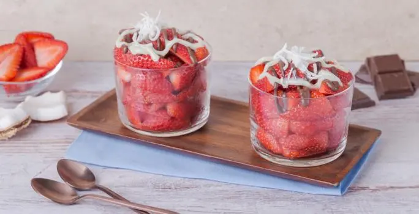

Fresas de coco
Las fresas de coco son un postre muy fácil de hacer y que a todos les encanta. Puedes acompañarlas con chocolate, caramelo o lo que más te guste.
CONSEJO NUTRICIONAL
Las fresas son una excelente fuente de vitamina C y antioxidantes.
CONSEJO CULINARIO
Puedes decorar con un poco de ralladura de coco tostado para un sabor extra.